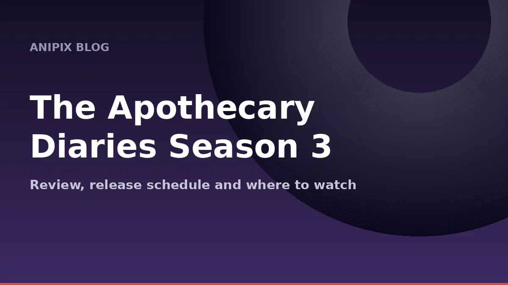
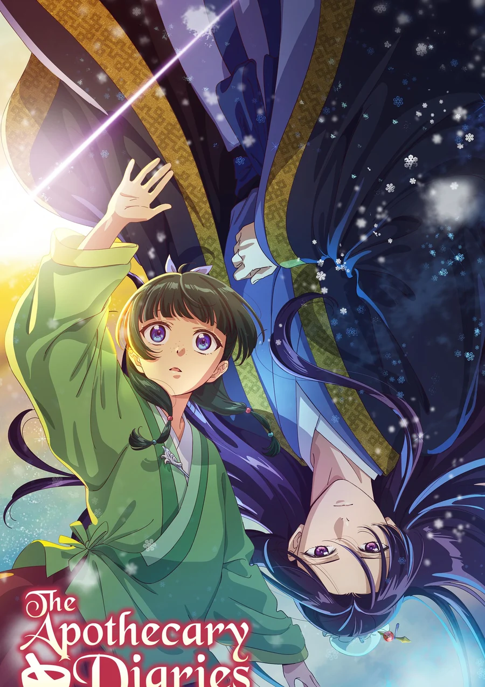
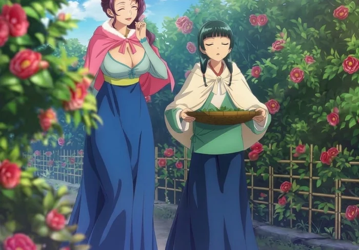

The Apothecary Diaries Season 3: Review, Release Schedule and Where to Watch

Last updated: 19 October 2026
The Apothecary Diaries is back, and it has walked straight back to the top. Season 3 premiered on 2 October 2026 and immediately took the number one spot on the Fall 2026 anime trending charts, ahead of Black Clover Season 2 and the JoJo Steel Ball Run adaptation. For a show that is mostly about a pharmacist noticing that something is slightly wrong with a breakfast, that is a remarkable thing to pull off.
This guide covers what the new season is about, how many episodes there are, where you can watch it, what the scores look like, and whether you should start here or go back to the beginning.
What is The Apothecary Diaries about?
Maomao is a young woman trained as an apothecary, raised in the pleasure district by her father. She is sharp, unsentimental, obsessed with poisons and medicines, and completely uninterested in court politics — which is unfortunate, because she is very good at noticing things the court would rather keep quiet.
The series follows her as she is pulled into the inner palace, then into the world around it, solving medical mysteries that keep turning out to be political ones. It is a mystery show wearing the clothes of a historical drama, and its real subject is the gap between what people say and what is actually happening.
What happens in Season 3?
Season 3 picks up after the Shi Clan rebellion. Things have finally settled, and Maomao has returned to her old life as a pharmacist in the pleasure district. But two threads immediately pull her back in.
The first is Jinshi, who has now revealed his true identity as the Emperor's brother and has begun to carry the weight of that role. He is troubled by the final message left by Loulan — a warning about a coming disaster that will strike the whole nation.
The second is stranger: rumours of a mysterious shrine maiden who is deceiving the people. As those rumours spread, the country of Li comes under a shadow again, and the story widens out from the inner court to the city streets and across foreign borders.
If Season 2 was about the palace, Season 3 looks set to be about the country. The stakes are noticeably bigger, and the world is noticeably larger.


Episode schedule and length
The season is listed at 12 episodes, roughly 24 minutes each, running weekly from 2 October 2026. That is the same shape as previous seasons, and the show has been consistent about using that time well — usually one main mystery with two or three smaller ones threaded through it.
Broadcast dates and episode counts do shift, so check the streaming page for the exact schedule in your region.
Where to watch
Outside Japan, The Apothecary Diaries streams on Crunchyroll, with new episodes going up shortly after the Japanese broadcast. In Japan it airs on Nippon TV and related channels. It is a light novel adaptation produced by Studio OLM.
Scores and reception
Scores move around during a season, so treat these as a snapshot rather than a verdict. As of mid-October 2026:
- MyAnimeList: around 8.66, from roughly 206,000 members
- AniList: around 85/100
- Anime Trending: number 1 on the Fall 2026 Week 1 chart
For comparison, the first two seasons sit at similar levels, which is unusual — most long-running shows drift downward as they go. The Apothecary Diaries has held its quality, and the new season has not damaged that record so far.
Should you start with Season 3?
No. This is a show where the mysteries build on each other and the character relationships carry most of the emotional weight. Starting at Season 3 means missing why Maomao is the way she is, why Jinshi's secret matters, and why the pleasure district scenes land the way they do.
Watch it in order:
- Season 1 — the inner palace arc, and the reason everyone fell for this show
- Season 2 — the Shi Clan story, which sets up everything Season 3 is reacting to
- Season 3 — the national arc, currently airing
If you have already seen the first two, you can jump straight in. If you have not, Season 1 is a self-contained and genuinely excellent place to begin.
Why it works
Most mystery anime solve their cases with a clever deduction delivered in a dramatic pose. The Apothecary Diaries solves them with knowledge — actual, specific, sometimes deeply unpleasant medical knowledge — and then shows you the political consequences of having that knowledge in a court that does not want it known.
Maomao is the reason it holds together. She is not a chosen one, she has no special power, and she would genuinely rather be left alone with her herbs. She investigates because she cannot stop noticing. That is a much more interesting engine than destiny, and it is why the show has kept its audience for three seasons.
Verdict
Season 3 is the strongest-looking start of the three, and the number one trending spot is deserved. If you like slow-burn mystery, historical detail, and a protagonist who is quietly smarter than everyone in the room, this is one of the best things airing right now.
If you have been putting it off, there is no better moment to catch up — the first two seasons are complete, and the new one is running weekly.